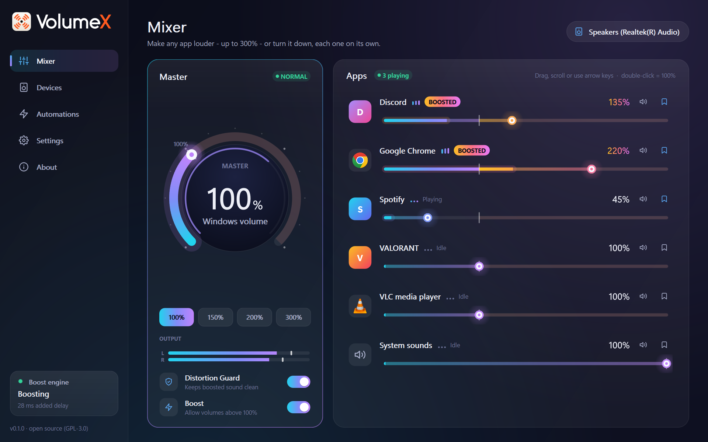
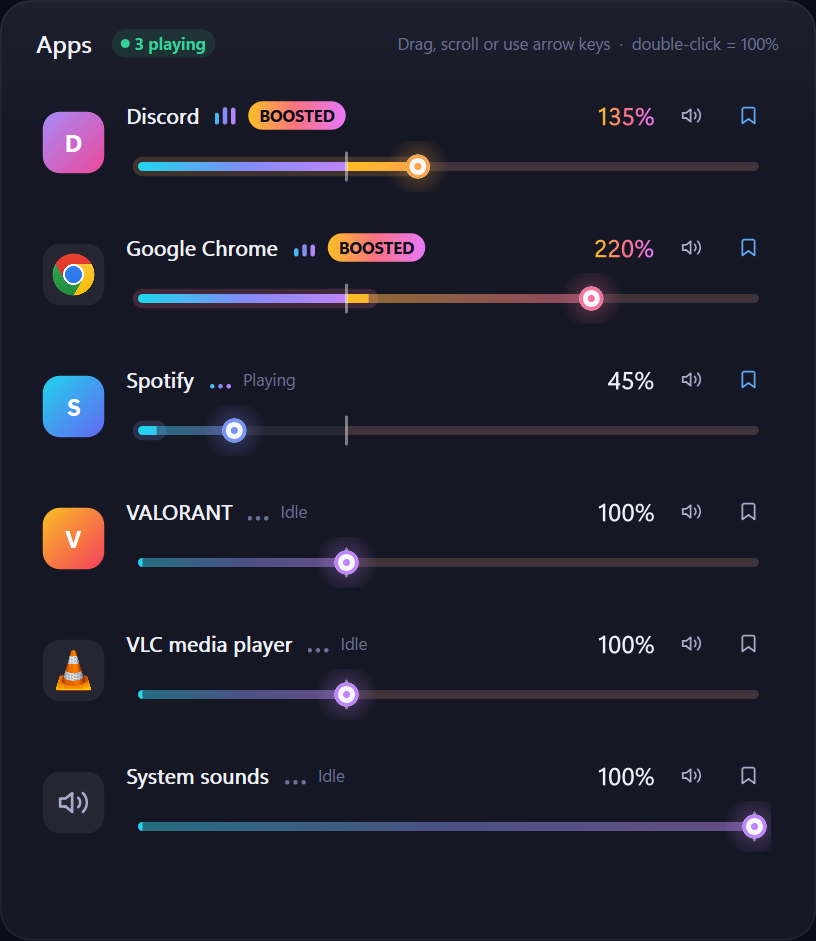
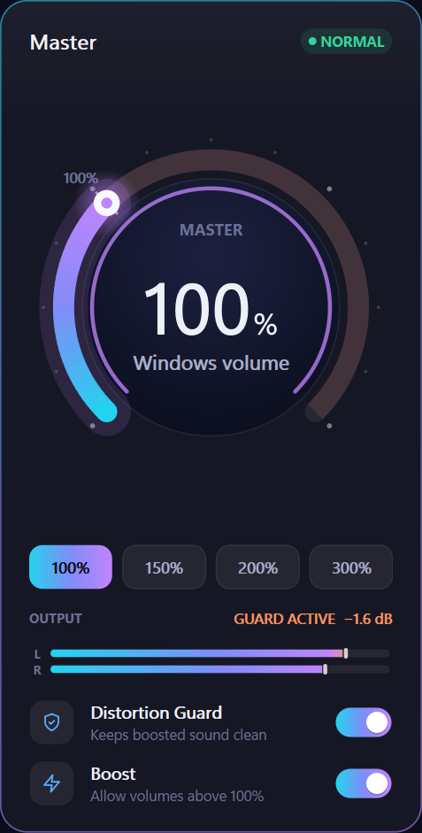
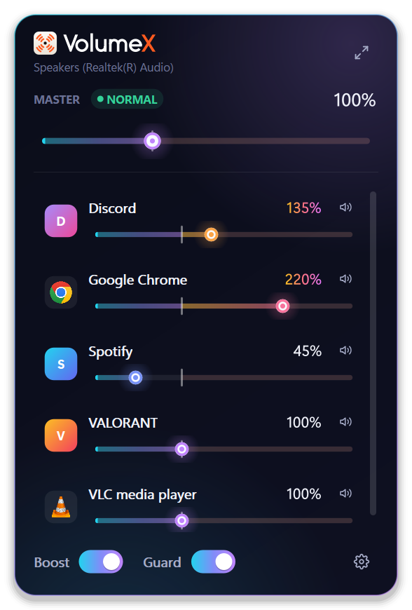
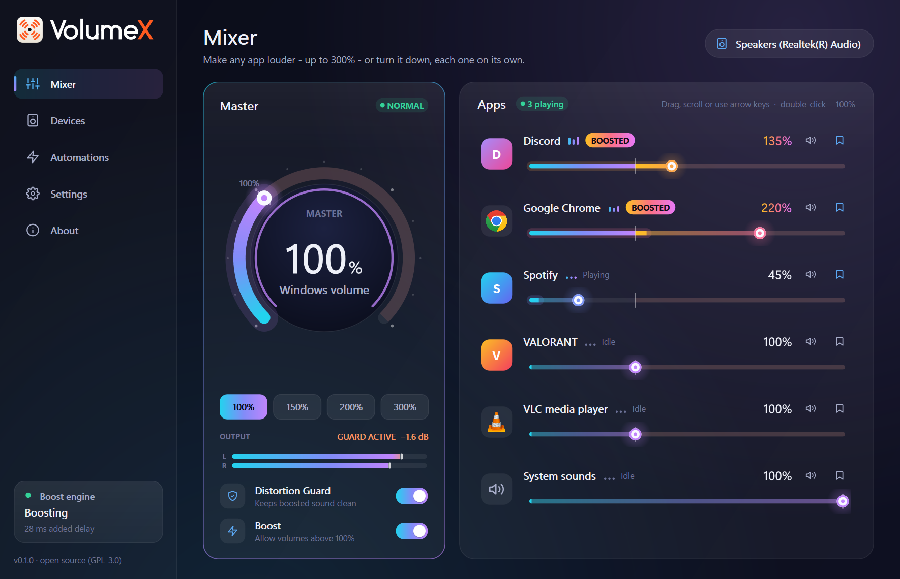

You drag past 100%
Every app has its own slider. Up to 100% it's plain Windows volume. Past the notch, VolumeX takes over.
VolumeX boosts any app, or your whole PC, past Windows' 100% limit, without the crackle. Everything you don't boost plays exactly as before.

Try it here
This is what VolumeX does for one app. Press play, then push the slider into the boost zone. Switch the Distortion Guard off to hear why it's there.
Press play - and start with your volume low.
How it works
Every app has its own slider. Up to 100% it's plain Windows volume. Past the notch, VolumeX takes over.
A boosted app plays through VB-CABLE, a free virtual device by VB-Audio. Everything else goes straight to your speakers, with no delay added.
The engine raises the level, and the Distortion Guard, a look-ahead limiter, catches every peak before it can clip.
Features
Chrome at 220%, Spotify at 45% and Discord at 135%, all at once. Each app gets a slider up to 300% (500% if you unlock it), with a live level meter built in.

One hotkey raises whichever app is in front, from anywhere. A small overlay shows the new level.
0ms
Apps you don't boost never touch VolumeX's audio path.
Up to 100% it's your normal Windows volume. Keep turning to boost everything, or tap a preset: 150%, 200%, 300%.


Click the icon for a quick mixer. It turns orange while something is boosted.
Windows often forgets your levels. VolumeX puts them back every time an app starts, and runs rules like "when Zoom starts, turn Spotify down to 30%".
Headphones at 180%, speakers at 100%. VolumeX remembers the master boost for each output and applies it when you switch.
Every change is written down before it's made, then undone on quit, crash or uninstall. No code injection, so it's safe to run alongside games with anti-cheat.
Take the tour

Safety
VolumeX doesn't talk to the internet. The one exception: if you ask it to install VB-CABLE and the copy that ships with it is missing, it downloads VB-Audio's official package, checks its signature and runs nothing else.
Your ears matter too. Levels change smoothly and never jump, the first boost comes with a hearing note, and the Distortion Guard is on by default. Don't take our word for any of this: read the code.
Get started
Run VolumeX-Setup.exe. VolumeX installs just for you, with no admin prompt.
Setup adds VB-CABLE by VB-Audio. Windows asks for permission once, then restart your PC.
Open VolumeX from the tray and boost whatever is too quiet. That's it.
About VB-CABLE: it's a free virtual audio device made by VB-Audio. VolumeX ships their official, unmodified package, as VB-Audio's licence allows. It's donationware. If it's useful to you, support VB-Audio.
Want details, settings and troubleshooting? Read the manual →
Thank you